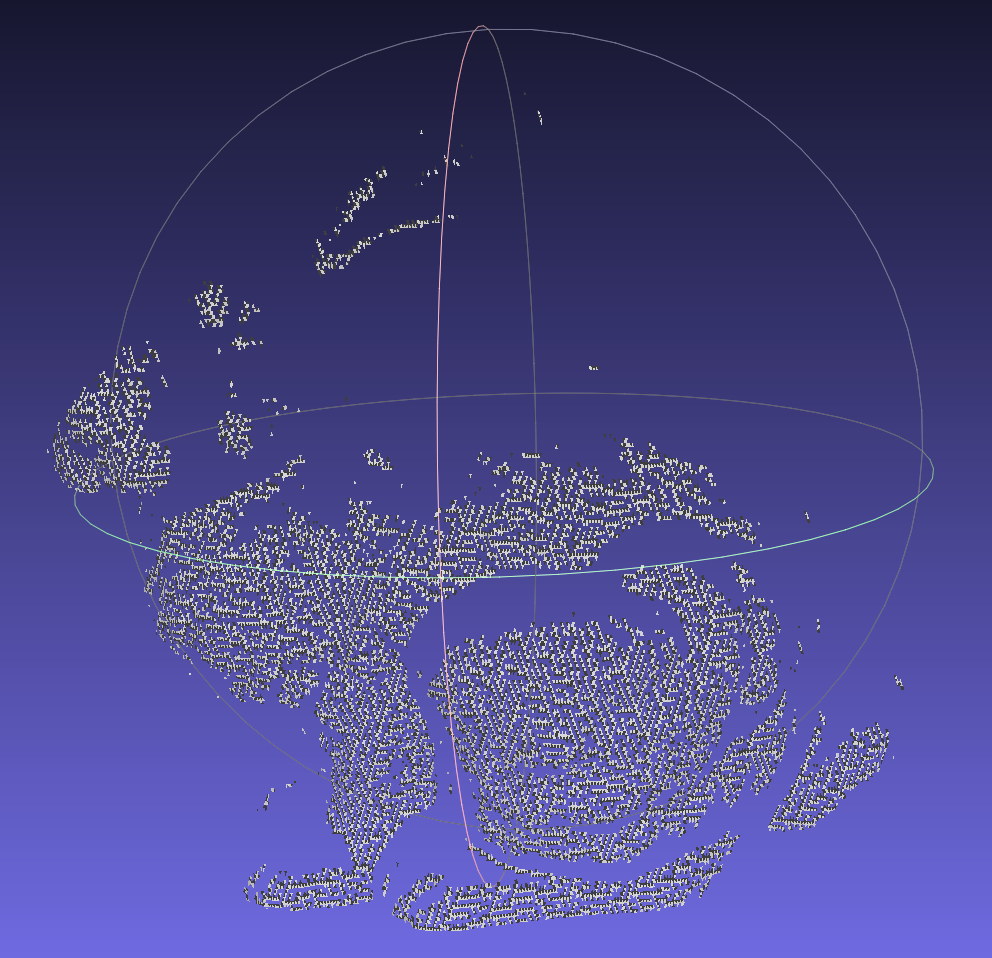
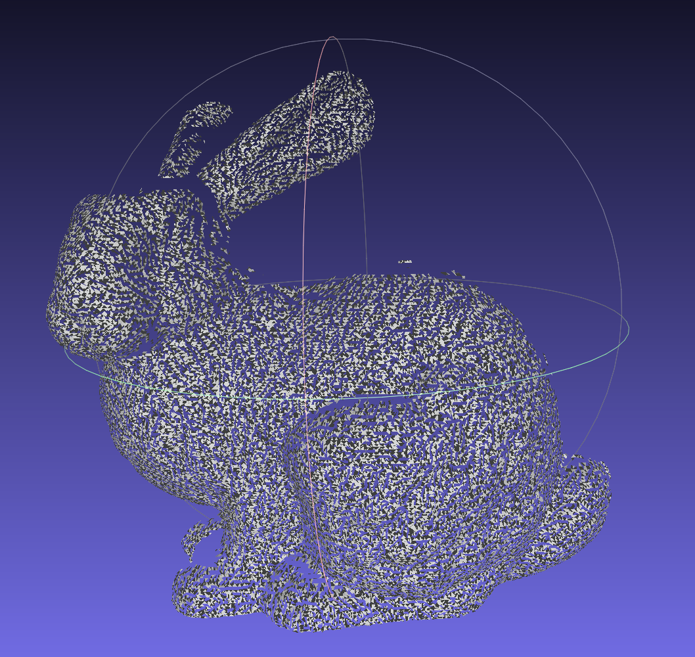

Contributions

|
- Pransu: research, submission, we all worked on CodeShare
- Ryan: research, rendering, we all worked on CodeShare
- Ivy: research, slides, webpage, we all worked on CodeShare
Our project’s goal is to construct a 3D mesh from a point cloud as input. A point cloud in our representation is a collection of points in ℝ3. Renderings of 3D objects are commonly achieved using a mesh structure made up of smaller shapes and faces, which is what makes this a challenging problem since we are trying to find an accurate way to infer the triangle faces from a collection of unconnected vertices. This sort of a system is useful in many AR/VR applications, medical imaging, and modeling of other real world objects where the object is sampled only by points as a point cloud.
We chose the Ball Pivoting Algorithm (as discussed in “The Ball-Pivoting Algorithm for Surface Reconstruction,” Bernardini et. al.) to recreate triangles from vertices. Instead of using one of the previous class projects as a starting point, we decided to write our implementation from scratch in Python3 in order to use its convenient data structures and low syntactic overhead. This meant we had to clearly define our design of the world we worked in (Vertex, Edge, Triangle, etc. representations) and map out the entire process of reading input, performing the algorithm, and outputting in a readable or renderable format.
We took a work fast, fail fast approach to implementing BPA by choosing Python as our coding language. This allowed us to verify correct understanding quickly; however, it restricted us from rendering very large ply files. We made a design doc prior to coding so that we flushed out the necessary data structures and how they would interact during the execution of the algorithm.
We used CodeShare to code together in real time and Zoom to communicate. We began by implementing a base skeleton of our data structures and added to them once new needs became obvious as we implemented the algorithm. We took a step-by-step approach, breaking down the algorithm into smaller sub-problems such as finding an initial ball radius, initial seed triangle, and how to traverse the mesh.
Methods implemented:
|

|
|

|
We tested our implementation using balls with different radii on the bunny file. We noticed:
|
|